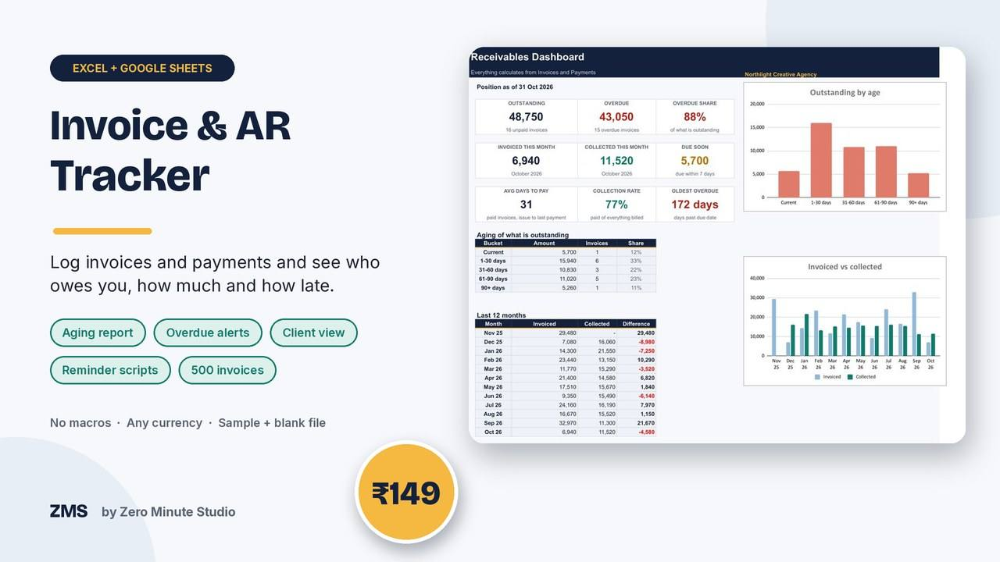
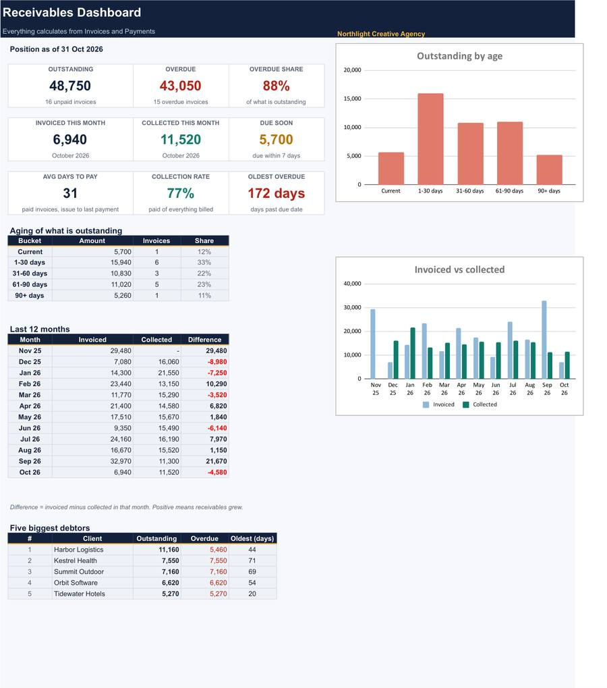
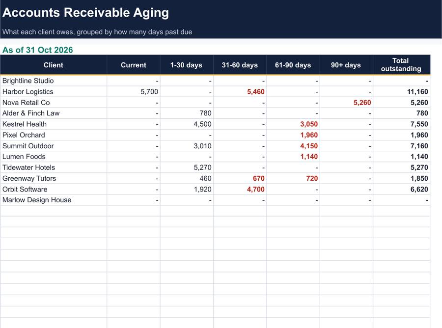
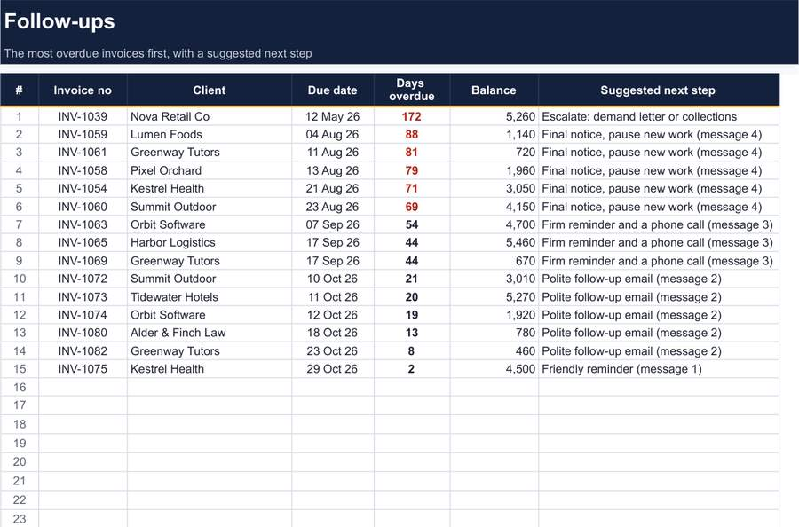

Invoice & Accounts Receivable Tracker

Sending the invoice is the easy part. Getting paid on time is where cash flow is won or lost. Log your invoices and payments and this tracker shows who owes you, how much, how late, and who to chase first, with the exact words to send.
- Dashboard: outstanding, overdue, invoiced and collected this month, average days to pay, collection rate, aging chart and your five biggest debtors
- Invoices register for up to 500 invoices: due date, paid, balance, status and days overdue calculate themselves
- Payments log with part-payment support
- Aging report by client: Current, 1-30, 31-60, 61-90 and 90+ days
- Follow-ups: the 25 most overdue invoices with a suggested next step and four reminder messages
- Sample file, blank file and a 2-page Quick Start PDF
Works in Excel 2010+ and Google Sheets. No macros, no add-ins, any currency.
Preview



Buy now: ₹149 (~$1.75)FAQ
What format is it? An .xlsx file for Excel and Google Sheets, plus a PDF guide.
Who is it for? Freelancers, agencies, consultants and small businesses that invoice clients and want to get paid faster.
How do I get it? Instantly after payment. For your own business use; please don't resell the files.
We don't do refund & return ✌️